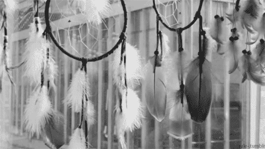
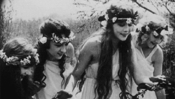
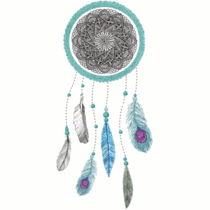

어디선가 한번쯤 보고, 들어보았을 법한 장식품 인데요, 말그대로 꿈을 잡는 도구라는 뜻을 가졌습니다.
이 드림캐쳐는 버드나무로 만든 고리의 동그란 틀에 끈을 거미줄처럼 엮은 뒤, 고리 아래에는 깃털, 각종 구슬 등으로 장식을 합니다.

과거 아메리카 원주민들이 악몽을 걸러주고 좋은 꿈만 꾸게 해준다는 의미로 만들었던 토속 장신구로, 고리 모양의 수제 장식품입니다.
원주민들 사이에서는 고대로부터 전해져오는 전설이 있었는데, 바로 거미여인이 아이들과 원주민들을 보호한다고 믿고 있었다고 합니다.
그런데 사람들이 늘어가고 각 지역으로 흩어지면서 거미여인의 손길이 일일이 다 닿지 못하니 부족들의 어머니와 할머니들이 따로 이 드림캐쳐를 만들어서 아이들과 사람들을 지켰다고 하는 유래가 있습니다.

오늘날 이 드림캐쳐가 가지고 있는 의미는 미국 대륙에 살았던 원주민의 부족에 따라 해석이 조금 다르기는 하지만 공통적인 것은 나쁜 꿈을 걸러내고 좋은 꿈을 온전히 받는다는 의미입니다.
나쁜 꿈은 드림캐쳐에 있는 구멍으로 모두 통과해버리고 좋은 꿈만 걸러져서 깃털을 타고 내려와 잠을 자고 있는 사람들에게 떨어진다고 믿거나 혹은 나쁜 꿈이 드림캐쳐에 걸려진다면 아침해가 떠오르면 그 빛을 받아 모두 사라져버린다고 믿었던거죠.
드림캐쳐가 둥근 이유와 그 속에 박힌 구슬은 무두 해와 달, 별을 상징하는 것이라고 합니다.
미국에서는 영화나 드라마에서도 자주 볼 수 있고, 실생활에서 흔히 쓰이는 도구 드림캐쳐.
이 드림캐쳐는 최근 한국에서도 많이 알려지고, 다양한 악세사리로도 만들어져 있습니다.